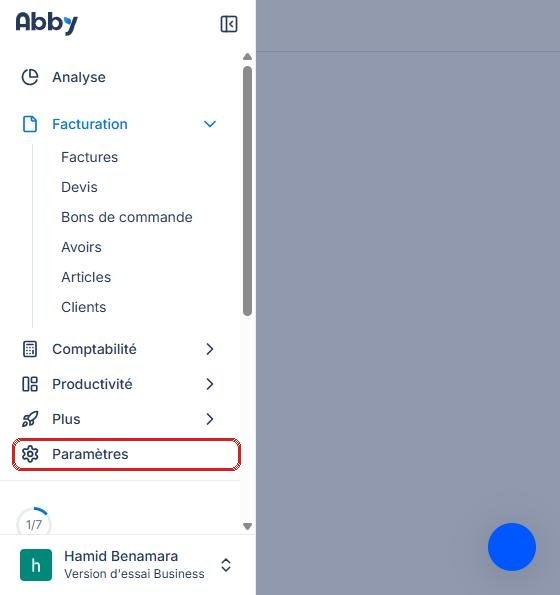
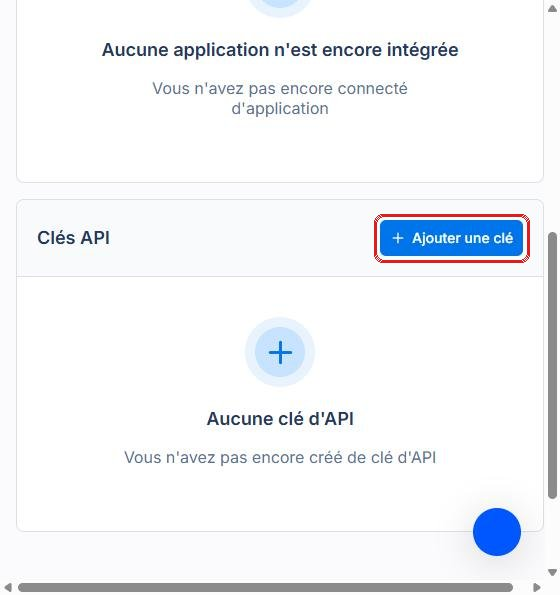
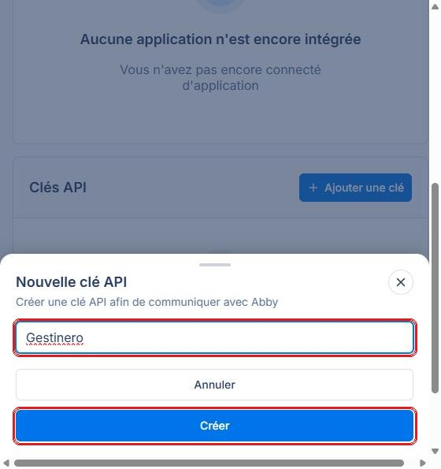
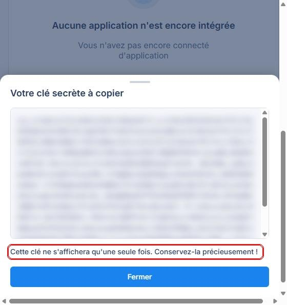
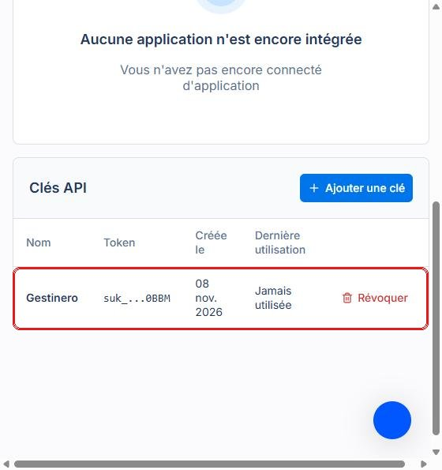
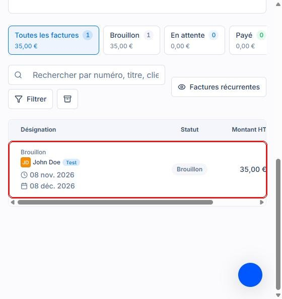
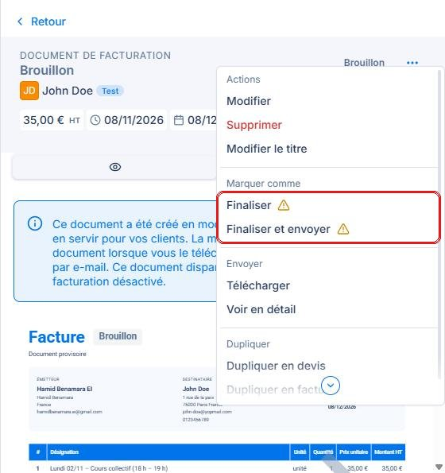

📱 Gestinéro prépare le récapitulatif du mois→🧾 Il l'envoie dans Abby, en brouillon→✅ Tu vérifies, tu finalises et tu envoies depuis Abby
Gestinéro ne finalise jamais la facture et ne l'envoie jamais à ton client. C'est toujours toi qui le fais, depuis Abby.
Ce qu'il te faut
Un compte Abby (tu peux déjà te connecter sur le site d'Abby).
Tes clients déjà créés dans Abby.
Gestinéro installé sur ton téléphone.
Un ordinateur, c'est plus simple pour l'étape 1.
1. Dans Abby : créer ta clé
Une clé API, c'est comme une clé de maison que tu donnes à Gestinéro : elle lui permet de déposer tes brouillons de factures dans ton compte Abby.
Connecte-toi à Abby. Dans le menu à gauche, clique sur « Paramètres », puis sur « Intégrations ».

Le menu d'Abby : « Paramètres » en bas.
Dans la partie « Clés API », clique sur « Ajouter une clé ».

Le bouton « Ajouter une clé ».
Pour le nom, écris Gestinero, puis clique sur « Créer ».

Le nom de la clé, puis « Créer ».
Abby affiche ta clé secrète. Copie-la tout de suite (clic droit › Copier) et garde-la dans un endroit sûr.

La clé est cachée ici : ne montre jamais ta vraie clé.
⚠️ Abby n'affiche la clé qu'une seule fois. Si tu la perds, clique sur « Révoquer » et crée-en une nouvelle. ⚠️ Ne l'envoie jamais à personne : ni par message, ni par e-mail, ni à l'assistance.

Ta clé « Gestinero » apparaît ensuite dans la liste.
2. Dans Gestinéro : coller ta clé
En bas de l'écran, touche « Facturation ».
Dans la carte « Mon logiciel de facturation », choisis Abby.
Colle ta clé dans la case, puis touche « Connecter et tester ». Le message « Abby connecté ✓ » s'affiche.
Touche « Associer mes clients » : pour chaque client de Gestinéro, choisis le même client dans Abby.
3. Envoyer un récapitulatif dans Abby
Dans Facturation, ouvre un récapitulatif enregistré et touche « 📤 Envoyer dans Abby (brouillon) ».
Dans Abby : menu Facturation › Factures. Ta facture est là, avec l'état « Brouillon ».

La facture envoyée par Gestinéro, en brouillon.
Ouvre-la et vérifie tout : le client, les lignes, le total.
Avec le bouton « … » en haut à droite, choisis « Finaliser », puis envoie-la à ton client.

« Finaliser », ou « Finaliser et envoyer ».
Ça ne marche pas ?
La clé est refusée : vérifie qu'elle est copiée en entier, sans espace avant ou après. Sinon, crée une nouvelle clé.
« Client à associer » : touche « Associer mes clients » dans Gestinéro et choisis le bon client Abby.
Rien n'arrive dans Abby : vérifie Internet sur ton téléphone, puis réessaie.